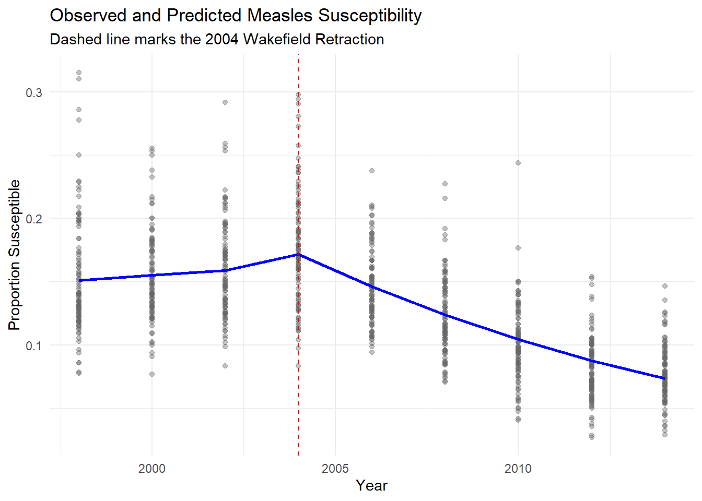
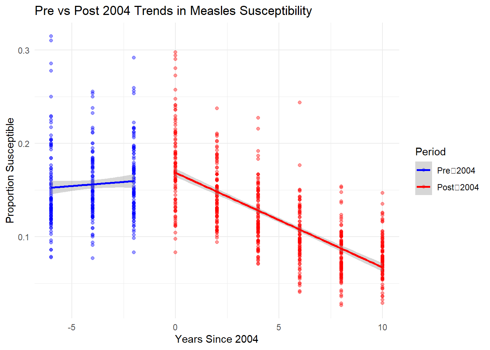

Group 14: Measles susceptibility in Edinburgh
Introduction
Measles is highly infectious and are easily spread throughout communities, vaccinations are key to limit the spread of measles. Population susceptibility is a key indicator of outbreak risks. In this study, the proportion of pre-school children who are susceptible to measles is analysed across intermediate zones.
Our data set consists of 101 intermediate zones (IZ) from Edinburgh. The IZ have on average 4,000 residents and the data is from 1998-2014. The data set also includes the number of pre-school children susceptible to measles in a given IZ and the total number of pre-schooled children in a given IZ.
Public concern regarding the measles, mumps and rubella (MMR) vaccine increased following the claims with links to autism, most notably in the Wakefield study. These claims were later dismissed and the Wakefield article was retracted in 2004.
We have two main questions of interest, including, did the retraction of the Wakefield article exhibit any change in measles susceptibility in Edinburgh. Also did the change, if there was any, occur in 2004 alongside the article’s retraction.
Exploratory Analysis
In the exploratory analysis we will put the data into two groups, pre-2004 and post-2004, this allows for an initial assessment of the impact of the retraction of the Wakefield article on measles susceptibility across IZ.
Figure 1 shows the proportion of the average measles susceptibility across all IZ for each year, we can see a large decrease in 2004 when the Wakefield article was retracted. After 2004 we see an exponential decrease in the average proportion of measles susceptibility untill our latest time point in 2014. 2004 had the largest value at 0.175 but we see this decrease each time period to eventually being just above 0.075 in 2014.

In Figure 2 we observe a clear change in average measles susceptibility between the two groups. Following 2004, the median susceptibility appears lower compared to the pre 2004 period, suggesting a decrease after the retraction of the Wakefield article. Variability appears similar between both groups whilst both groups appear to have potential outliers, indiacting the presence of intermediate zones with unusually high susceptibility.
Formal Analysis
Before modelling, several new variables were created to encode the structure of the interrupted time series:
Post: an indicator variable equal to 1 for years after or including 2004 and 0 otherwise.
This captures any immediate level change in susceptibility at the point of retraction.Time: a continuous time variable centred at 2004 (Year − 2004).
This represents the underlying trend before the retraction.Interaction: the product of Time and Post.
This term allows the slope after 2004 to differ from the slope before 2004, capturing a change in trend rather than just a jump.Prop: the observed proportion susceptible (Y / N).
This is used only for plotting and descriptive summaries; the model uses the binomial counts.To evaluate changes in susceptibility, we fitted a binomial generalised linear model of the form:
\(Y_i ~ Binomial (N_i,p_i)\)
\(log(p_i/1-p_i)= \beta_0+\beta_1 Time +\beta_2 Post + \beta_3 (Time \cdot Post)\)
This model allows us to estimate:
\(\beta_1\) : the pre-2004 trend
\(\beta_2\) : the immediate level change in susceptibility in 2004
\(\beta_3\) : the change in trend (slope) after 2004
Call:
glm(formula = cbind(Y, N - Y) ~ Time + Post + Interaction, family = binomial,
data = data)
Coefficients:
Estimate Std. Error z value Pr(>|z|)
(Intercept) -1.635141 0.042514 -38.461 <2e-16 ***
Time 0.015172 0.009823 1.545 0.122
Post 0.062356 0.047323 1.318 0.188
Interaction -0.111520 0.010507 -10.614 <2e-16 ***
---
Signif. codes: 0 '***' 0.001 '**' 0.01 '*' 0.05 '.' 0.1 ' ' 1
(Dispersion parameter for binomial family taken to be 1)
Null deviance: 1768.26 on 908 degrees of freedom
Residual deviance: 805.34 on 905 degrees of freedom
AIC: 4583.4
Number of Fisher Scoring iterations: 4Coefficient estimates and 95% confidence intervals were extracted to aid interpretation.
Estimate 2.5 % 97.5 %
(Intercept) -1.63514090 -1.718775847 -1.55211764
Time 0.01517201 -0.004081481 0.03442634
Post 0.06235633 -0.030179000 0.15533007
Interaction -0.11151986 -0.132115355 -0.09092715These results indicate:
Time (pre‑2004 trend): not statistically significant, suggesting susceptibility was relatively stable before the retraction.
Post (level change in 2004): not statistically significant, indicating no immediate jump in susceptibility at the point of retraction.
Interaction (change in slope post‑2004): highly significant (p < 0.001), indicating a substantial change in the trend of susceptibility after 2004.
This pattern suggests that while the retraction did not cause an abrupt shift, it was associated with a meaningful change in the direction or rate of change of susceptibility in subsequent years.
To support interpretation, Figure 3 we plotted both the observed proportions and the model‑based predicted values over time.

Figure 4 below compares pre and post 2004 linear trends.

The interrupted time‑series analysis provides strong evidence of a significant change in the trend of measles susceptibility following the 2004 retraction of the Wakefield article. Although there was no immediate level shift, the post‑2004 slope changed markedly, indicating that susceptibility evolved differently after the retraction. This suggests that the retraction may have influenced vaccination behaviour in Edinburgh, leading to a measurable shift in susceptibility patterns over time.
To investigate whether the change in measles susceptibility occurred specifically in 2004 alongside the retraction of the Wakefield article, we fitted a grouped binomial logistic regression model. This approach is appropriate because, for each intermediate zone and year, the data record the number of susceptible pre-school children Y out of the total number of pre-school children N. Therefore, the response is naturally binomial. To answer this question, the model included an overall time trend and a separate indicator for the year 2004. This allowed us to assess whether measles susceptibility in 2004 deviated from the general pattern observed over time.
Table 1 presents the estimated odds ratios from the fitted model. The key parameter is the indicator for the year 2004, since this directly tests whether 2004 represented a distinct change point after accounting for the overall temporal trend in measles susceptibility.
| Term | Odds Ratio | Lower 95% CI | Upper 95% CI | p-value |
|---|---|---|---|---|
| (Intercept) | 0.207 | 0.200 | 0.214 | <0.001 |
| Time trend | 0.906 | 0.899 | 0.913 | <0.001 |
| Year 2004 indicator | 1.373 | 1.296 | 1.454 | <0.001 |
The coefficient for the 2004 indicator was positive and highly statistically significant. The estimated odds ratio for the 2004 effect was 1.373 (95% CI: 1.296 to 1.454, 𝑝 < 0.001). This indicates that, after accounting for the overall time trend, the odds of measles susceptibility in 2004 were substantially higher than would be expected from the broader temporal pattern alone. Therefore, the analysis provides evidence that measles susceptibility in 2004 was higher than would be expected from the broader temporal trend alone, suggesting a short-term deviation around that year.
The time trend was also statistically significant, with an estimated odds ratio of 0.906 (95% CI: 0.899 to 0.913, 𝑝 < 0.001). This suggests that measles susceptibility generally declined over the study period. However, despite this overall downward trend, the significant positive 2004 effect indicates that 2004 represented a distinct short-term increase in susceptibility.

Figure 5 compares the observed yearly proportions with the fitted values from the model. The fitted values capture the overall decline in measles susceptibility over time, while also indicating a distinct upward deviation in 2004 relative to the long-term trend. This visual pattern is consistent with 2004 appearing as a distinct high point relative to the longer-term decline in susceptibility.
Overall, there is strong statistical evidence that 2004 deviated from the overall temporal trend in measles susceptibility. After accounting for the general decline over time, the odds of susceptibility in 2004 remained significantly higher than expected. This suggests that 2004 was associated with a short-term increase in susceptibility, consistent with the timing of the retraction of the Wakefield article, although the broader post-2004 change may be better characterised as a change in trend rather than an immediate permanent shift.
Conclusions
The exploratory analysis showed a noticeable difference between the periods pre and post 2004, with lower average susceptibility observed after 2004. The grouped binomial logistic regression model showed a significant declining trend in measles susceptibility over time. After this trend, the indicator for year 2004 remained statistically significant, with the odds ratio greater than 1. This indicates that measles susceptibility in 2004 was higher than expected based on the general trend.
Overall, the findings provide strong evidence that year 2004 represents a clear deviation from the long term trend, indicating that the change in susceptibility occurred specifically in that year rather than as part of a gradual decline. In addition, the analysis suggests that the pattern of change after 2004 is better described as a shift in the trend, rather than an immediate level change. This pattern is consistent with the timing of the Wakefield article retraction.
There are several limitations to this study: The analysis is observational and cannot establish definite causality between the Wakefield article retraction and the changes in susceptibility. The results should be interpreted with caution. Other unmeasured factors (such as policy, public health campaigns) may also have contributed to the observed trend.
Future work could extend this analysis by incorporating additional covariates, such as economic status and basic vaccination coverage, and by applying more flexible models to better analyze potential trends and effects.